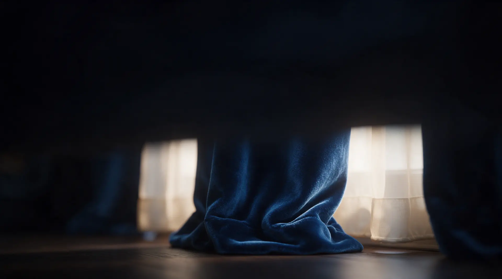
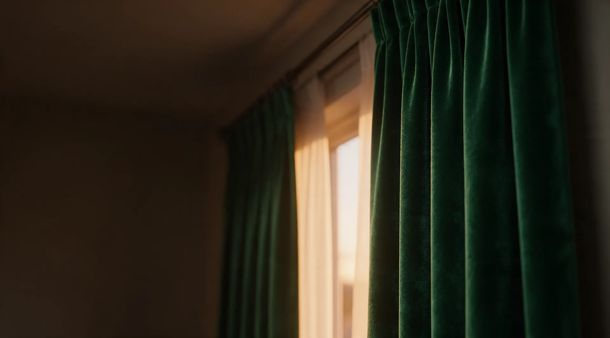
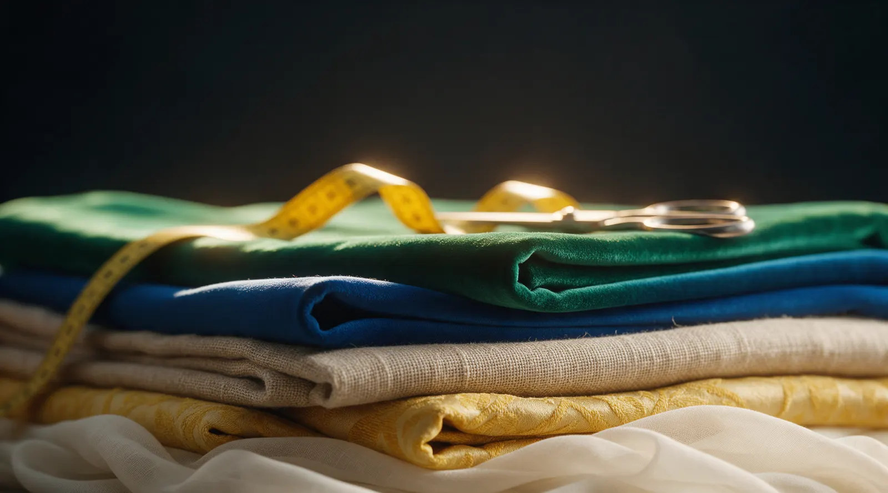
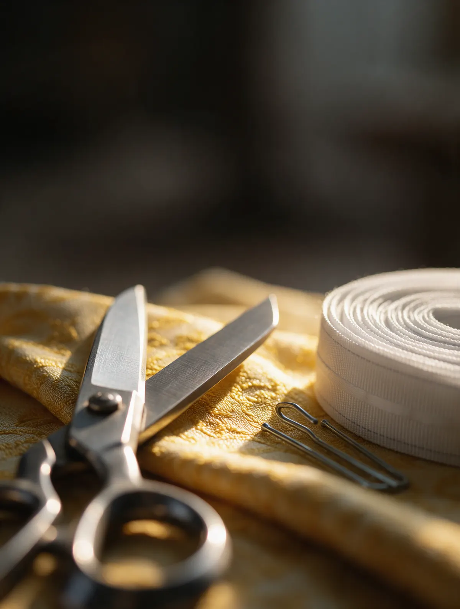
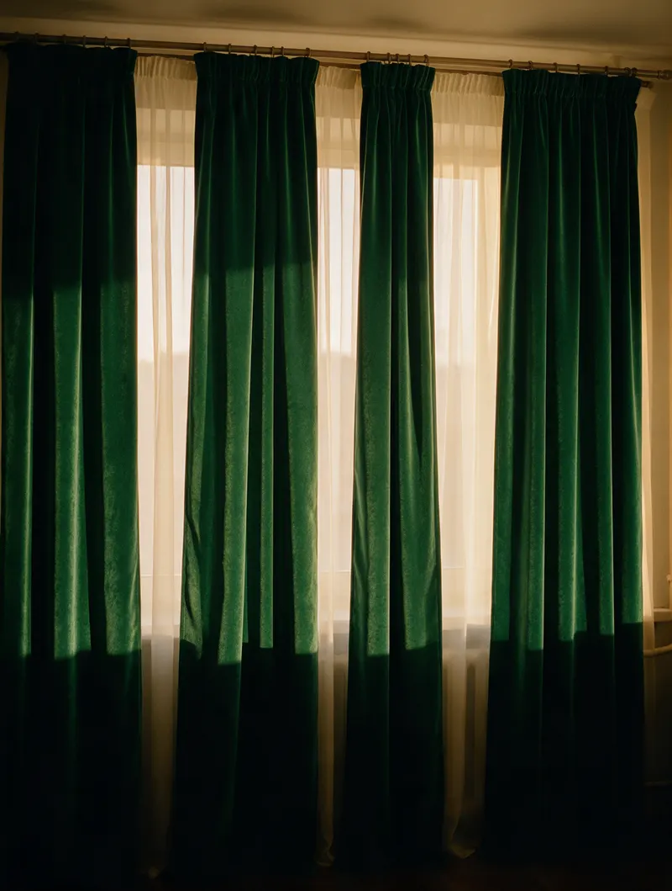
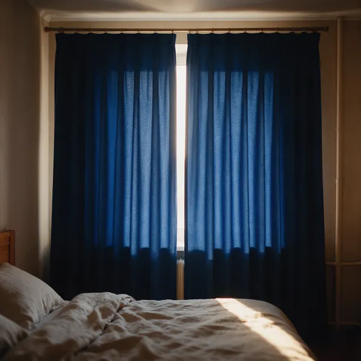
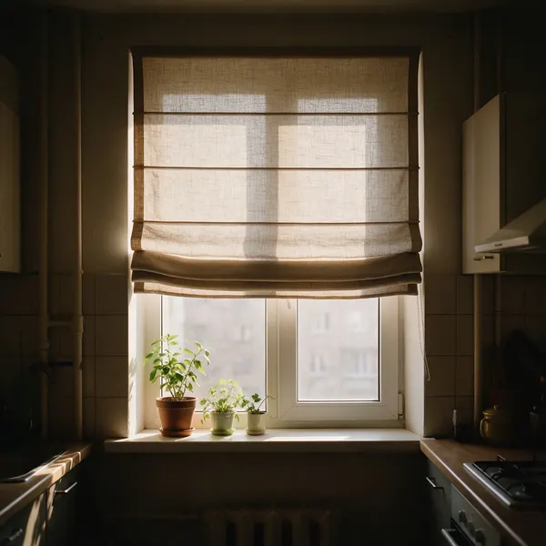
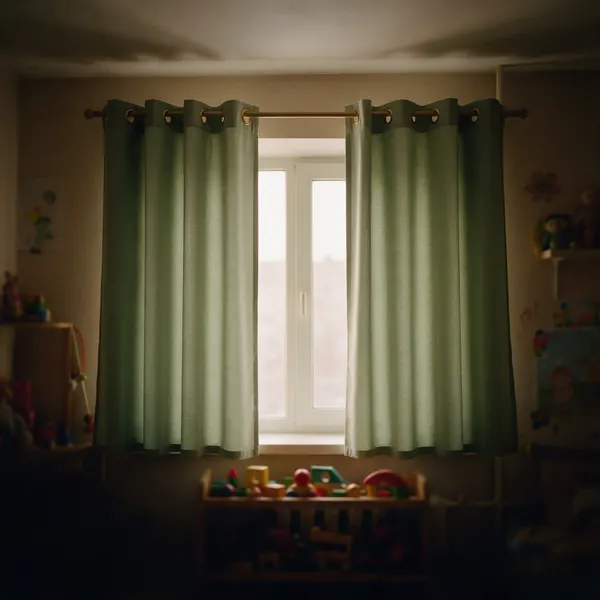
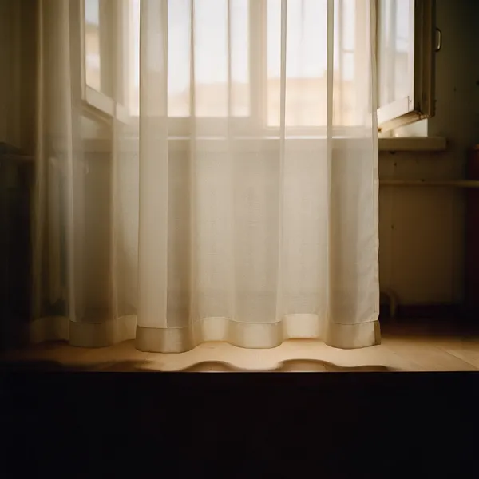

Прислали фото окна
Фото окна и примерные размеры в мессенджер или заявка на сайте - отвечаем ориентиром цены по ткани и типу штор, которые вам нравятся.

приедем с рулеткой и образцами тканей
датой в смете, а не «недели через две»
повесим сами и отпарим на месте
Портьеры, тюль, блэкаут и римские шторы по вашим окнам. Цену называем по фото окна, срок и итог - в смете до начала пошива.
Выбирать штору под лампой шоурума, а вешать у своего окна, где совсем другой свет.
Сначала называют цену «за метр ткани», потом добавляются тесьма, утяжелитель, подгиб, навеска - и итог совсем другой.
Срок не записан - значит, его нет. А шторы вышли короче, чем нужно, или лежат на полу, и переделывать «уже не наш вопрос».
Цену называем по фото окна и размерам, до замера. На замер привозим образцы тканей - выбираете у своего окна. Срок и итоговая цена - в смете до начала пошива, вместе с тесьмой и навеской.

Фото окна и примерные размеры в мессенджер или заявка на сайте - отвечаем ориентиром цены по ткани и типу штор, которые вам нравятся.
Меряем от карниза до пола сами, смотрим, как ложится свет. Ткань выбираете у своего окна, а не под лампой салона.
Ткань, тесьма, утяжелитель, пошив и навеска - строками. Итог после пошива не меняется. Если срок горит - звоним заранее.
Привозим готовые шторы, вешаем на ваш карниз и отпариваем на месте. Длина не та - подшиваем, это входит в работу.
Это строки нашей сметы. Точная цена зависит от ткани и ширины окна, поэтому итог называем после замера - и он уже не меняется: тесьма, подгиб и утяжелитель в нём учтены.

Четыре условия, которые стоят в смете до начала пошива.

Тот, кто приезжал на замер, сам и шьёт, сам и вешает. Имя мастера стоит в смете, поэтому «кто мне это мерил» спрашивать не придётся, а подшить на навеске может тот же человек.
Ниже - окна, для которых мы шили: гостиные, спальни, кухни и детские.





Напишите, какие окна и какие шторы хотите. Перезвоним, уточним размеры и договоримся о замере с образцами тканей.